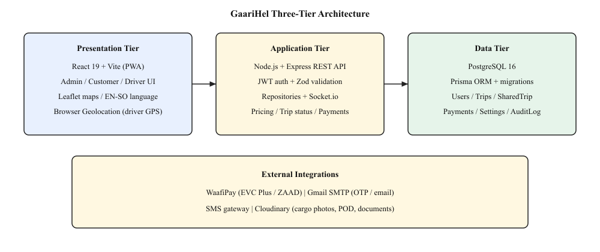

CHAPTER III
METHODOLOGY
(Mobile and Web Dev FYPs)
This chapter outlines the system description, features, architecture, development approach, hardware and software requirements, and user requirements for GaariHel, a web-based truck dispatch and cargo booking platform developed for Somalia. GaariHel connects cargo owners (customers), truck drivers, and platform administrators in a single digital workflow. The system supports two freight modes: Full Truck Load (FTL), where one customer occupies an entire truck, and Shared load (SHARED), where two or more customers on the same corridor share one truck assigned by the administrator. The chapter provides a structured framework for understanding how the system will achieve the research objectives defined in Chapter I.
The methodology follows an iterative development approach suitable for web applications. Requirements were derived from observation of informal freight practices in Somali cities, consultation with the project supervisor, and analysis of comparable dispatch systems adapted to local constraints such as mobile-money payment (WaafiPay), Somalia administrative geography (gobol, magalo, neighbourhood), cargo measurement by type (kg, litres, livestock head), and GPS-based distance measurement on driver phones. The product does not use driver bidding or a separate dispatcher portal; assignment is performed by the administrator.
GaariHel is a Progressive Web Application (PWA) that allows customers to submit cargo requests online, administrators to register drivers and assign verified trucks, and drivers to accept jobs, record pickup measurement, share live GPS location, upload proof of delivery, and complete trips. Customers track shipments, receive notifications, open support complaints, rate completed trips, and pay 100% of the fare after the trip status becomes Delivered. Public visitors see Features, How it Works, and customer testimonials on the landing page, plus informational pages (About, Contact, Help, FAQs, Terms, Privacy).
The final fare is calculated only at Delivered as the sum of (1) a cargo charge based on the measured quantity and unit for that cargo type, and (2) a distance charge based on GPS kilometres travelled after pickup, using pricing rates configured by the administrator. For shared loads, the administrator pools at least two compatible requests onto one SHARED truck. The driver Accepts or Rejects the whole job once, enters measurement per load at pickup, and delivers each booking. The brand slogan is “Hel gaari, dir rarkaaga”; drivers can install the PWA on mobile phones for GPS tracking on the road.
The following sections describe the main features implemented in GaariHel.
Customers self-register online. Driver accounts are created by administrators (driver self-registration is blocked) and each driver is linked to exactly one truck with a service type of FTL or SHARED. Login uses email or username and password, with optional email OTP verification. JWT tokens maintain session state. Users can reset forgotten passwords and update profile details.
Customers submit booking forms with Somalia region, district, neighbourhood, cargo type, description, optional photo, sender and receiver contacts, and preferred pickup date. FTL requests request a full truck; SHARED requests indicate willingness to share a corridor. Quantity may remain TBD until pickup measurement. Where a quote path is used, customers can review quote details on their trips screen; payment remains gated until Delivered.
Administrators assign FTL trucks and pool SHARED requests on the same corridor. They also manage users and customers, fleet/drivers, trips, payments and earnings/payouts, pricing settings, reports, audit logs, support complaints, notifications, SMS tools, and live GPS tracking maps. Audit logs record critical administrative actions (for example driver verification, payment changes, and shared pool assignment) for accountability.
FTL drivers Accept or Reject individual assigned trips. Shared drivers Accept or Reject the entire pool once. After acceptance, drivers advance trip status one step at a time: Assigned → En Route to Pickup → Arrived at Pickup → Picked Up → In Transit → Near Destination → Delivered. At pickup they enter cargo measurement. Shared drivers may reorder stops and deliver each booking separately. Proof-of-delivery photos are required before marking Delivered.
Pickup measurement depends on cargo type: kilograms (KG), litres (LITER), or livestock head (HEAD) with separate rates for camels, sheep, and goats. After Picked Up, GPS distance accumulates with accuracy filters. At Delivered, fare = cargo charge (quantity × unit rate) + distance charge (GPS km × rate per km).
Drivers share location from the phone browser. Admin and customer live-tracking screens use Leaflet maps. Billing distance starts after pickup. Socket.io pushes updates when the API runs as a long-lived server; otherwise clients poll.
After Delivered, customers pay 100% via WaafiPay (EVC Plus / ZAAD). Payment is blocked before delivery. Commission splits driver and platform earnings after payment; drivers and administrators can view earnings and payouts.
In-app notifications cover assignment and status events; SMS and email may be sent where configured. Users can open support complaints. After delivery, customers can rate trips; testimonials may appear on the landing page Clients section. Public About, Contact, Help, FAQs, Terms, and Privacy pages are available without login.
GaariHel uses a three-tier client–server architecture. The presentation tier is a React single-page application (Vite PWA) with role-based routes for admin, customer, FTL driver, and shared driver, plus public pages. The application tier is a Node.js Express REST API with Socket.io, Zod validation, and JWT authentication; business rules live in repository modules. The data tier is PostgreSQL accessed through Prisma ORM. External integrations include WaafiPay, SMTP email, SMS, and Cloudinary.

Figure 3.1: Three-tier architecture of GaariHel
Data flows from the browser to REST endpoints, through repositories that enforce business rules, to the database. This separation keeps security, pricing, and payment gating on the server.
The project followed an iterative (evolutionary) process with short build–test cycles rather than a single waterfall delivery. Work was organised into phases aligned with Final Year Project milestones.
Requirements were collected using three complementary methods before and during design:
Findings were turned into functional requirements (R1–R15) and non-functional requirements (NFR1–NFR8), then refined iteratively when prototypes exposed issues such as GPS jitter before pickup and weight-only pricing for fuel or livestock.
| Phase | Activities | Main outputs |
|---|---|---|
| Requirements | Observation, supervisor consultation, comparable-system analysis | R1–R15, NFR1–NFR8 |
| Design | Architecture, database schema, trip status chain, shared-pool rules | ERD, use cases, Prisma models |
| Implementation | Frontend dashboards, Express API, WaafiPay, GPS fare, SHARED pool | Working prototype modules |
| Testing | Manual walkthroughs; Vitest suites; security and device checks | Test results (Chapter IV) |
| Deployment & docs | Environment configuration, seed data, thesis documentation | Demo-ready system |
Out of scope for this version: driver bidding auctions, a separate dispatcher login portal, and public truck browsing without registration.
| Component | Minimum specification | Purpose |
|---|---|---|
| Developer workstation | Intel Core i5 or equivalent, 8 GB RAM, 256 GB storage | Code development, testing, documentation |
| Network | Broadband internet connection | API access, deployment, integrations |
| Server (production) | Cloud VM or hosting with Node.js support | Host backend API |
| Database server | PostgreSQL 16 compatible host | Persistent data storage |
| Driver smartphone | Android or iOS with GPS and modern browser | PWA install, live GPS tracking |
| Customer/admin device | Desktop, laptop, or smartphone with browser | Booking, assignment, payments |
| Category | Technology |
|---|---|
| Development tools (IDE) | Visual Studio Code / Cursor, Git |
| Programming languages | JavaScript (ES modules), HTML, CSS |
| Frontend framework | React 19, Vite 6, React Router 7, Tailwind CSS 4 |
| Backend runtime | Node.js, Express 4 |
| Database | PostgreSQL 16, Prisma ORM |
| Real-time | Socket.io |
| Validation | Zod |
| Authentication | JSON Web Tokens (JWT), bcrypt password hashing |
| Payment gateway | WaafiPay API |
| Maps / GPS | Browser Geolocation API, Leaflet maps |
| Image storage | Cloudinary (uploads) |
| Testing | Vitest |
| Operating systems | Windows 10/11 (development); Linux (server deployment) |
| Browser | Chrome, Edge, Firefox, Safari (latest versions) |
| ID | Requirement |
|---|---|
| R1 | The system shall allow customer self-registration and admin/customer/driver login; administrators shall register drivers; each driver shall be linked to exactly one truck and a service type (FTL or SHARED). |
| R2 | The system shall allow customers to submit FTL cargo requests with Somalia geo fields, cargo type, and optional photo. |
| R3 | The system shall allow customers to submit SHARED cargo requests for corridor-based freight. |
| R4 | The administrator shall assign an available FTL truck to a pending FTL request. |
| R5 | The administrator shall pool at least two SHARED requests on the same corridor onto one SHARED truck. |
| R6 | FTL drivers shall accept or reject an assigned trip; SHARED drivers shall accept or reject the whole pooled job once. |
| R7 | Drivers shall enter actual pickup measurement by cargo type (KG, LITER, or HEAD) before continuing past pickup. |
| R8 | The driver application shall record GPS distance travelled after pickup during an active trip. |
| R9 | The system shall compute final fare only at Delivered using measured quantity rates plus GPS km against admin pricing. |
| R10 | Customers shall pay 100% of fare via WaafiPay only after Delivered; payment shall be blocked before delivery. |
| R11 | Drivers shall upload proof of delivery before marking a trip Delivered. |
| R12 | The system shall send in-app notifications (and SMS/email where configured) for assignment and status events. |
| R13 | Administrators shall manage users, trucks/fleet, pricing rates, payments/earnings, reports, support complaints, and audit logs. |
| R14 | Customers shall rate trips after delivery; testimonials may appear on the landing page; drivers shall view earnings after payment. |
| R15 | Shared drivers shall reorder stops and deliver each booking; shared trip completes when all loads are Delivered. |
| ID | Category | Requirement |
|---|---|---|
| NFR1 | Security | All protected API routes shall require valid JWT; role-based access shall restrict admin-only operations. |
| NFR2 | Usability | Interfaces shall be role-specific dashboards with English and Somali language support. |
| NFR3 | Performance | List and detail screens shall load within acceptable time under normal operational use. |
| NFR4 | Reliability | Trip status shall advance only along the defined chain; invalid skips shall be rejected; POD required for Delivered. |
| NFR5 | Maintainability | Backend shall use layered routes, repositories, and shared validation modules. |
| NFR6 | Portability | The driver client shall work as a PWA on Android and iOS browsers with GPS permission. |
| NFR7 | Scalability | Database design shall support growing numbers of users, trips, and shared bookings. |
| NFR8 | Auditability | Critical admin actions such as shared pool assignment and driver verification shall be logged in audit records. |
| Role | Needs from the system |
|---|---|
| Customer | Self-register/login; book FTL or SHARED; track trips; notifications; pay after Delivered; rate delivery; open support. |
| FTL driver | Admin-registered account with one truck; Accept/Reject jobs; update status; enter measurement; share GPS; upload POD; earnings. |
| SHARED driver | Accept/Reject whole pool once; reorder stops; enter measurement per booking; deliver each load; earnings. |
| Administrator | Register drivers; assign FTL and SHARED; manage users/fleet; set pricing; payments/earnings; map and trips; support; reports and audit logs. |
Technical feasibility: React, Node.js, PostgreSQL, and Prisma are free for academic use. GPS, mobile money, and hosting are available in Mogadishu. Core modules including cargo measurement and GPS fare have been implemented in the prototype.
Economic feasibility: Development uses free or low-cost tools. WaafiPay aligns with local payment habits without card infrastructure. No proprietary hardware is required beyond standard computers and phones.
Operational feasibility: The workflow mirrors local practice (admin assigns truck; driver runs trip; customer pays after delivery) with added GPS transparency. PWA install reduces the need for a native app store release in the first version.
Schedule feasibility: Prioritising FTL, SHARED, GPS fare, and payment modules enabled a demonstrable system within the academic year.
This section presents the main UML views used in design. Larger copies are also placed in the Appendix (Figures A1 and A2) for printing convenience.
Primary actors are Customer, FTL Driver, Shared Driver, and Administrator. Supporting actors include WaafiPay, SMS/Email, Cloudinary, and device GPS. Major use cases include Register/Login, Submit Cargo Request, Assign Truck / Pool Shared Loads, Accept/Reject Job, Enter Pickup Measurement, Track GPS, Mark Delivered with POD, Pay Fare, Open Support, Rate Trip, Manage Pricing, View Audit Logs, and Handle Support.

Figure 3.2: Use case diagram of GaariHel
Refer also to Appendix Figure A1 (same diagram, full-page copy).
The ERD shows the main relational entities: User, Truck, CargoRequest, Trip, SharedTrip, SharedTripBooking, Payment, Earning, SupportComplaint, TripFeedback, AuditLog, Notification, and Setting.

Figure 3.3: Entity-relationship diagram of GaariHel (simplified)
Refer also to Appendix Figure A2 (same diagram, full-page copy).
Testing was planned alongside development so that each critical requirement could be verified before demonstration. Chapter IV reports detailed results; this section summarises the methods used.
| Type | Approach | Examples / tools |
|---|---|---|
| Unit testing | Test isolated functions and validation rules | Vitest suites for cargo measurement, trip status transitions, payment gating |
| Integration testing | Exercise repositories and API handlers with mocked or local database layers | Registration, shared-trip pool behaviour, booking validation tests |
| API / functional testing | Black-box walkthrough of role journeys against running API and UI | Login, FTL assign, SHARED pool, Accept/Reject, Delivered fare, WaafiPay flow |
| Security testing | Confirm authentication and authorisation boundaries | JWT required on protected routes; customer cannot assign; non-driver cannot accept |
| Device compatibility testing | Check responsive layout and driver PWA GPS on common devices/browsers | Chrome/Edge desktop; Android Chrome; iOS Safari (limited PWA) |
Defects found during early GPS and pricing tests (for example distance accumulating before pickup, or kg-only fare for livestock) were fixed and re-tested before final documentation.
The database uses a relational model in PostgreSQL via Prisma. Core entities include User, CustomerProfile, Truck, CargoRequest, Trip, TripLocationPoint, Payment, Earning, SharedTrip, SharedTripBooking, Notification, Setting, AuditLog, TripFeedback, DeliveryFeedbackToken, SmsNotification, SupportComplaint, and VerificationCode. There is no Bid entity. A driver User has a one-to-one Truck. CargoRequest stores geo fields, cargo type, measuredQuantity, and measurementUnit. Trip stores status, fare, GPS position, and distanceTraveledKm. AuditLog stores actor, action, entity, and metadata for admin accountability.
| Entity | Key attributes | Relationships |
|---|---|---|
| User | id, name, email, role, serviceType | One truck (driver); many cargo requests (customer) |
| Truck | id, truckNumber, plateNumber, capacity, status | Belongs to one driver User |
| CargoRequest | geo fields, cargoType, measuredQuantity, measurementUnit, loadType, status | Customer; optional Trip / SharedTripBooking |
| Trip | status, fare, distanceTraveledKm, lastLat, lastLng | CargoRequest; driver; truck; payments |
| SharedTrip / SharedTripBooking | status, capacity; pickupOrder, deliveryOrder | Driver/truck; many bookings |
| Payment / Earning | amount, status, reference / payout fields | Trip; customer / driver |
| AuditLog | action, actorId, entityType, metadata, createdAt | Admin / system actions |
| SupportComplaint / TripFeedback / Notification | message/status; rating; title/body | User / Trip |
Primary keys and foreign keys follow the Prisma schema. Money and quantity fields use decimal types. Status fields use controlled enumerations. See Figure 3.3 and Appendix Figure A2 for the ERD view.
This chapter presented GaariHel’s methodology aligned with the implemented prototype: requirements gathering methods, admin-assigned FTL and SHARED freight, three-tier architecture, iterative development, hardware/software needs, functional and non-functional requirements (R1–R15, NFR1–NFR8), feasibility, UML diagrams (use case and ERD), testing methodology, and database design including AuditLog. Chapter IV reports implementation screenshots and how these requirements were verified.